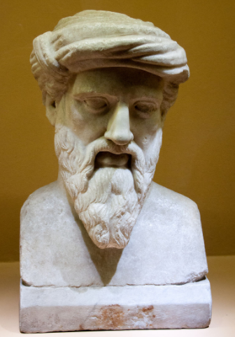

Biografía Corta
Pitágoras de Samos
Πυθαγόρας της Σάμου
Pitágoras, uno de los filósofos pre-socráticos con más vigencia en la actualidad.

Nació en el año 570 AC en la isla de Samos en la Grecia Jonia, hoy costa de la Turquía moderna y murió en el 490 a. C. en Mataponto, la Magna Grecia, hoy Italia. Después de viajar por el mundo antiguo conocido, a la edad de cuarenta años emigró a la ciudad de Crotona, en la Magna Grecia, donde desarrolló la mayor parte de su actividad filosófica y religiosa.
Lo transmitido por algunos de sus biógrafos señala que Pitágoras recibió la mayor parte de su educación en el Antiguo Egipto, el Imperio Neo babilónico, el Imperio Aqueménide y Creta. Otros afirman que también había aprendido de las enseñanzas de los magos en Persia o incluso del mismo Zoroastro. Se dice que los fenicios le enseñaron aritmética, que los caldeos le enseñaron astronomía, que también había estudiado con los judíos y con los sabios hindúes en la India.
Pitágoras no escribió nada, ni dejó ningún escrito. Todo se conoce por lo que escribieron sus contemporáneos. En el mundo moderno es conocido por sus aportes a las matemáticas y a la ciencia, pero en su tiempo era famoso por sus conceptos de la división del ser humano entre Cuerpo y Alma; de la inmortalidad del Alma y la reencarnación; por los rituales religiosos de purificación para alcanzar la inmortalidad y como el fundador de un estilo de vida estricto que enfatizaba las restricciones dietéticas, los rituales religiosos y la autodisciplina.
Su academia en la Magna Grecia fue muy popular; sus seguidores expandieron sus creencias y modo de vida durante más de quinientos años por todo el mundo mediterráneo. Las reglas para los alumnos eran estrictas y sus estudios estaban basados en las matemáticas, la filosofía, la música y la astronomía.
El siguiente video contiene un resumen de la vida de Pitágoras:
- Actividad No. 1
-
Investigue sobre la influencia de Pitágoras en el mundo antiguo.
- Actividad No. 2 Preguntas para Lectura Activa
-
- ¿Dónde en nació?
- ¿En qué ciudad murió?
- ¿En qué ciudad desarrollo su actividad filosófica y religiosa?
- ¿Dónde obtuvo sus conocimientos?
- ¿Qué obras escribió?
- ¿En qué áreas es mayor su aporte?
- ¿Enseño que existía la reencarnación?
- ¿Durante cuantos años fue famosa su academia?
- ¿En qué áreas de conocimiento estaba basada la enseñanza en su academia?